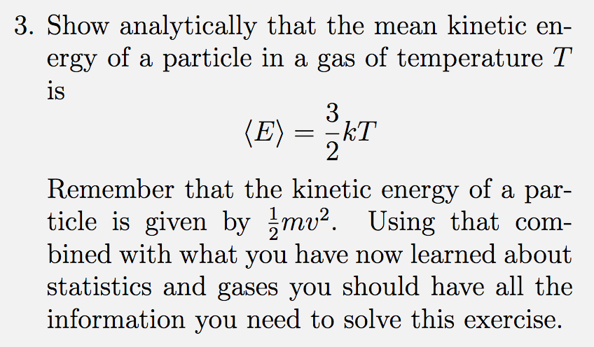

Forrige side🙂 🙁Middel og standardavvikFORUM
Vi skal igjen se på et utdrag av en ukeoppgave, fra oppgave 1A5: 
(prosjektstudenter, dere har et liknende spørsmål i utfordring A3, del 1). Tenk gjennom og diskuter med medstudenter hvordan du vil gå frem for å løse oppgaven. Når du har en ide, gå videre til neste side.